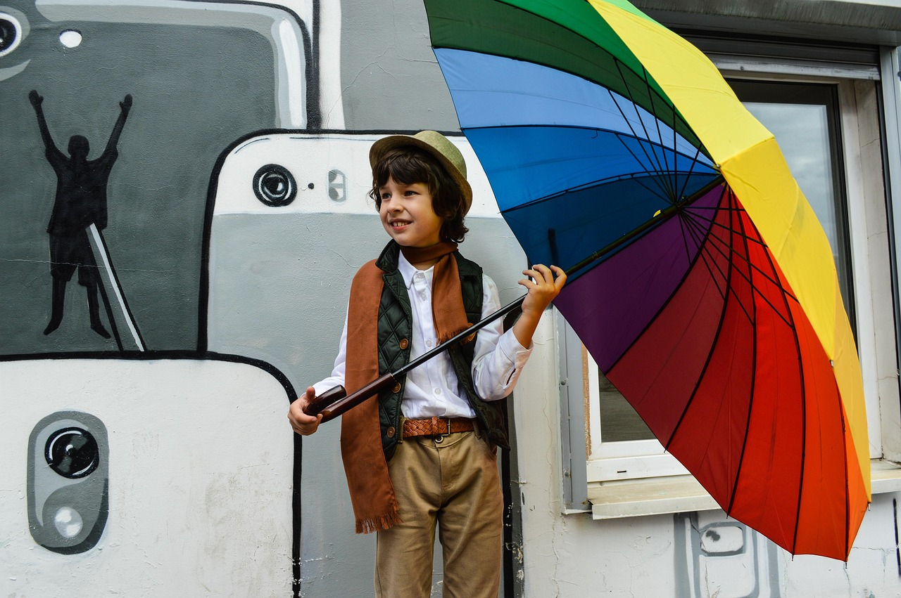

Picture of bright red rose garden taken from Pixabay
Red instantly grabs attention because it's bold, energetic, and emotionally intense. Designers use it when they want something to feel exciting, urgent, or full of passion.
It can highlight important information or create strong emotional reactions. When used carefully, red makes a design stand out without overwhelming the viewer.
Picture of beach waves in shades of blue taken fromPixabay
Blue creates a sense of calm and stability, which is why so many brands rely on it to build trust. It feels steady and reliable, almost like a visual deep breath.
Lighter blues feel soothing and gentle, while darker blues communicate seriousness and confidence. This makes blue one of the most versatile colors in design.
Yellow brings warmth, optimism, and a burst of creativity wherever it appears. It draws the eye quickly without being too overpowering.
Because of its brightness, yellow can make a design feel friendly and inviting. When paired with darker colors, it creates strong contrast and a cheerful mood.
Pink often carries feelings of comfort, kindness, and emotional warmth. It can be soft and calming or bold and expressive depending on the shade.
Modern design uses pink to show creativity and confidence rather than traditional stereotypes. It's a flexible color that adapts well to fashion, branding, and art.

Picture of color capturing attention taken frompixabay
Colors play a huge role in how customers notice, remember, and react to a brand. Marketers use color choices to guide emotions and create strong associations.
A single color can influence whether something feels exciting, trustworthy, youthful, or luxurious. Understanding these reactions helps companies shape the way their brand is perceived.
Picture of different colors evoking different emotions taken fromPixabay
Artists use color to communicate emotion, mood, and atmosphere in ways words often can't. Every shade carries its own meaning, from calm blues to powerful reds.
Color therapy builds on these ideas by using color to support relaxation and emotional balance. It shows how deeply color affects our minds and feelings every day.
Use the navigation above to visit each full page for examples and tips.
External Resources
Below are links for deeper understanding of color psychology